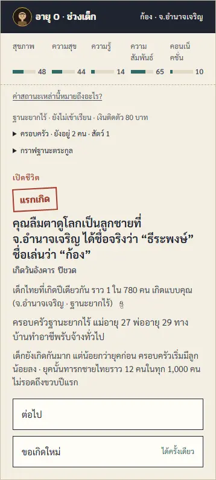
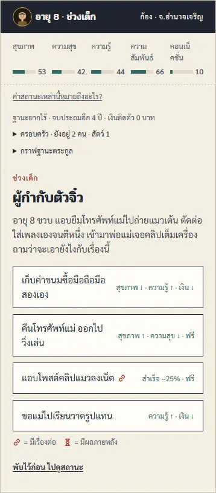
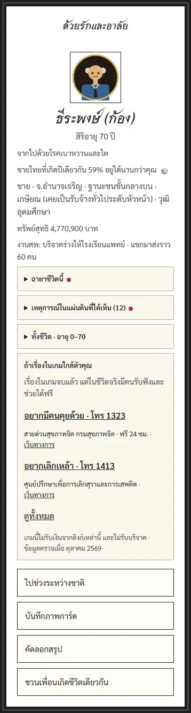
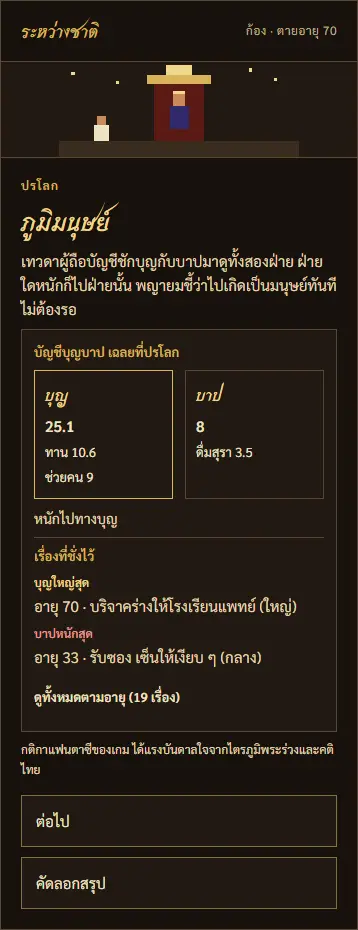

ชาติไทย
เกิดใน 77 จังหวัด ฐานะ 10 ระดับตามยุคจริง เจอเหตุการณ์บ้านเมืองจริงอย่างต้มยำกุ้งหรือน้ำท่วมใหญ่ เรียน ทำงาน มีครอบครัว เก็บเงินลงทุน แล้วตายตามตารางชีพจริง
ตายแล้วไปปรโลก บัญชีบุญบาปเฉลยที่นั่นที่เดียว ได้ภูมิปลายทาง 1 ใน 5 แล้วเลือกเฝ้าลูกหลานหรือเกิดใหม่
การ์ดในเกม 248 ใบ · ดูการ์ดทั้งหมด
ต่างโลก
โลกแฟนตาซีที่เทพธิดาต่างโลกพาวิญญาณไปเกิด เลือกบทบาท รับสกิลโกง ไต่แรงค์กิลด์ แล้วตายกลับมาให้ปรโลกเดิมตัดสิน กรรมเป็นบัญชีเดียวทั้งสองโลก
ตอนนี้เป็นเกมสั้นแยกต่างหาก กำลังย้ายเข้าเกมหลัก · เล่นเกมสั้น · อ่านรายละเอียด
หน้าตาเกมจริง




ภาพจากหน้าเกมจริง ถ่ายใหม่ทุกครั้งที่เว็บอัปเดต
แพตช์โน้ตการเปลี่ยนแปลงแต่ละเวอร์ชัน · กติกาที่เปลี่ยน · ระบบที่กำลังทำ
กลไกในเกมอะไรมาจากข้อมูลจริง · อะไรเป็นสมมติฐานเกม · อะไรเป็นกติกานอกคัมภีร์
ต่างโลกทางเข้า บทบาท ค่าสถานะ กิลด์ บุญบาปต่างโลก และกลับโลกเดิมได้อะไร
การ์ดทั้งหมดการ์ดทุกใบในเกม แยกตามช่วงวัย พร้อมข้อความและตัวเลือก
ภาพรวมการออกแบบระบบในเกมทีละหมวด กับคำตัดสินหลักของแต่ละเรื่อง
สเปกและรีเสิร์ชข้อมูลคติไทย การเงิน และข้อมูลตามยุคพร้อมแหล่งอ้างอิง
ระบบหลัก
- ค่าสถานะ 5 ตัว (สุขภาพ · ความสุข · ความรู้ · ความสัมพันธ์ · คอนเน็คชั่น) กับเงินเป็นบาท · ตัวเลือกบอกผลแค่ทิศทาง
- ตายตามตารางชีพจริงรายปี สุขภาพ และกรรม · ไม่มีเพดานอายุตายตัว
- บัญชีบุญบาปซ่อนไว้ เฉลยที่ปรโลก (ได้แรงบันดาลใจจากไตรภูมิพระร่วง) · กรรมตามทันได้ในชาตินี้
- ครอบครัวมีชื่อ อายุ และความผูกพันรายคน ตายแล้วเกิดเป็นลูก · หลาน · เหลนของตัวเองได้
- การเงิน: เงินฝาก หุ้น ทอง ที่ดิน ธุรกิจ หนี้ · ผลตอบแทนปีอดีตใช้ค่าจริง
- ชีวิต 17 แบบ ฉายา 28 ตัว และฉายาตระกูล 7 ตัว · สมุดฉายาเก็บตัวที่เคยได้